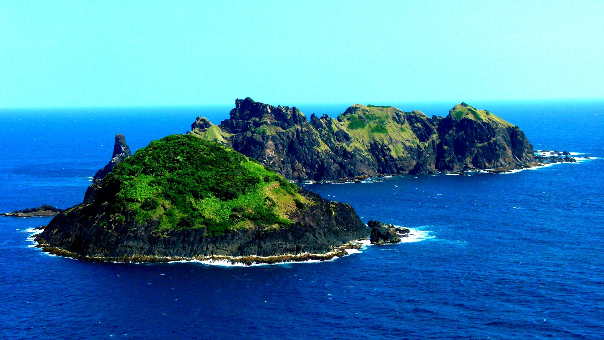

Welcome to Region II
Cagayan Valley sits in the northeast of Luzon, between the Sierra Madre and the Cordillera. It is home to the Cagayan River, the longest river in the Philippines, and covers five provinces: Batanes, Cagayan, Isabela, Nueva Vizcaya, and Quirino.
Here you can crawl through limestone caves, island-hop to quiet beaches, walk the rolling green hills of Batanes, and eat pancit batil patong in Tuguegarao. Start with the photos below, then plan your trip.
Places to See

